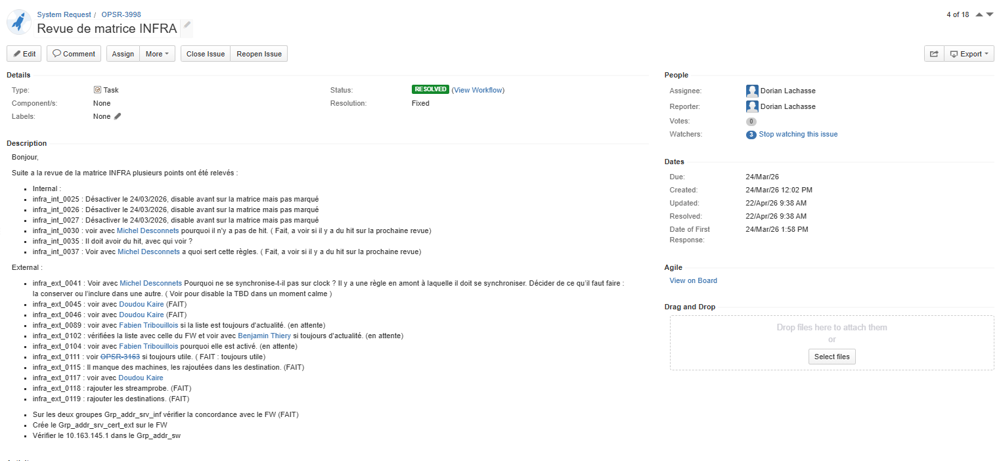
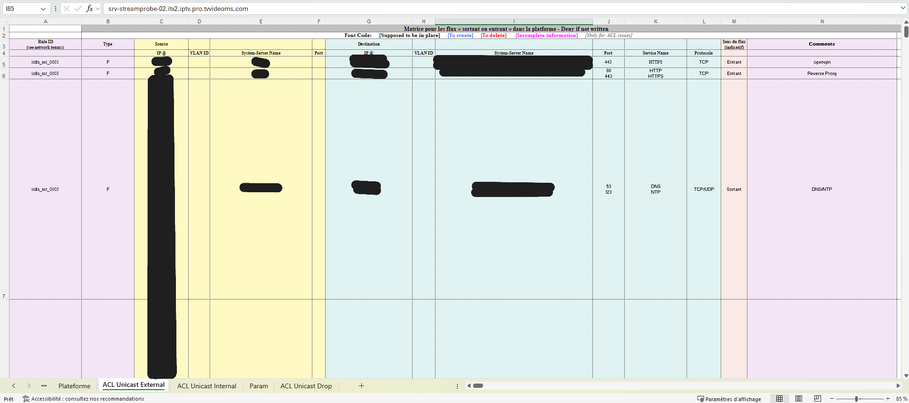
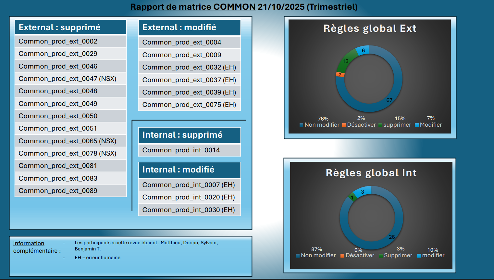

Rédaction et mise à jour des revues de matrice de flux
Contexte
L’entreprise possède plusieurs plateformes interconnectées. Dans ce contexte, il est important de maintenir à jour les matrices de flux afin de suivre les règles réseau, les communications autorisées et les modifications réalisées.
Cette mission consistait à participer aux revues de matrice, suivre les règles modifiées, rédiger des synthèses et produire des rapports permettant d’avoir une meilleure visibilité sur les plateformes.
Objectifs
- Assister aux revues de matrices de flux
- Suivre les règles modifiées, supprimées ou à vérifier
- Rédiger des comptes rendus par plateforme
- Identifier les incohérences dans les règles réseau
- Produire des statistiques de suivi
- Proposer un compte rendu annuel
Environnement technique
Travaux réalisés
Suivi des revues
Participation aux revues de matrices afin de suivre les règles concernées et noter les actions à réaliser pour chaque plateforme.
Mise à jour des matrices
Mise à jour des fichiers Excel contenant les règles de flux, les sources, destinations, ports, protocoles et commentaires associés.
Suivi via JIRA
Utilisation de tickets JIRA pour tracer les demandes, les points relevés, les personnes concernées et l’avancement des corrections.
Création de rapports
Réalisation de rapports de synthèse avec graphiques et statistiques afin de visualiser les règles supprimées, modifiées ou conservées.
Ticket de suivi JIRA
Revue de matrice INFRA
Exemple de ticket JIRA utilisé pour centraliser les points relevés lors d’une revue de matrice : règles à désactiver, règles à vérifier, incohérences et actions à suivre avec les collaborateurs concernés.

Exemple de matrice de flux
Fichier Excel de matrice
Exemple de matrice de flux utilisée pour identifier les règles réseau, les sources, les destinations, les ports, les protocoles et le sens du flux. Les informations sensibles ont été masquées.

Rapport de synthèse
Rapport trimestriel de matrice
Exemple de rapport de synthèse permettant de visualiser les règles supprimées, modifiées ou non modifiées, ainsi que les statistiques globales internes et externes.

Résultats obtenus
Impact pour l’entreprise
- Meilleure connaissance des plateformes
- Suivi plus clair des règles réseau
- Identification des règles obsolètes ou incohérentes
- Traçabilité des modifications réalisées
- Vision synthétique grâce aux rapports
Apports de la mission
Cette mission a permis d’améliorer le suivi documentaire des flux réseau et de proposer une vision plus claire de l’état des règles grâce à des comptes rendus et des statistiques exploitables.
Compétences mobilisées
- Administration système et réseau
- Documentation technique
- Suivi de projet
- Organisation de réunions
- Analyse de règles de flux
- Utilisation d’Excel et de JIRA
Documentation associée
Bilan personnel
Cette mission m’a permis d’apprendre à créer des rapports, organiser des réunions, relancer les collaborateurs concernés et suivre l’évolution de règles réseau dans un contexte professionnel.